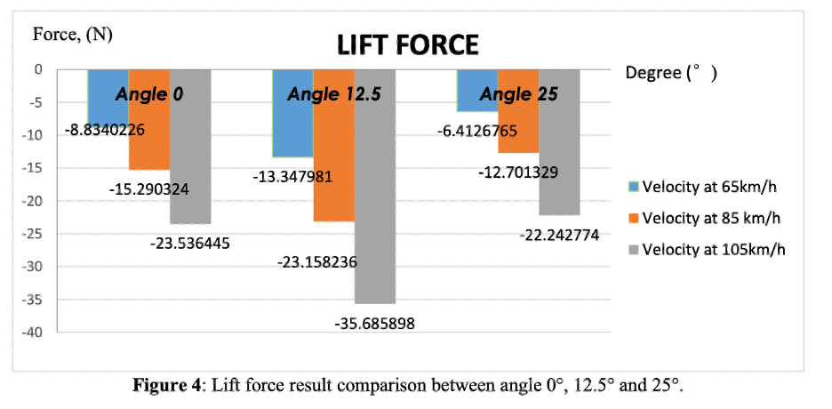

This paper discusses the functions of downforce and drag, the compromises engineers must make, and significance of components that
contribute to the aerodynamic make of the car, such as like airfoils, which aid in maximizing aerodynamic efficiency. The paper
also delves into idea of the angle of attack, and how it can affect drag and downforce, showing how In order to balance the conflicting
needs of cornering and straight line speed, a versatile aerodynamic configuration is essential for optimizing performance to certain tracks
Introduction
Aerodynamics is one of the most pivotal considerations for engineers when designing a Formula 1 car, as it governs the behaviour of airflow
around the vehicle. Which significantly influences the car’s handling characteristics, particularly its grip and stability through corners,
as well as its ability to achieve optimal straight-line speed. The part that depicts majority of the airflow onto the rest of the car is
the wing, guiding the air onto the wheels and sidepods. Effective aerodynamic design in this area involves maximizing downforce to enhance
cornering performance while minimizing drag to reduce resistance and improve overall speed. Balancing these competing aerodynamic forces
is crucial for achieving competitive performance.
Analysis-and-discussion
Drag is considered the force that opposes the motion of a body. In a study by Pandit, A. & Day, G. (2021).., it was mentioned that drag
can be produced in two ways, Friction and Pressure. In the case of an F1 car, the chassis collides with air particles at speed,
which cause an opposing motion leading to the car needing to generate more thrust to maintain velocity. This is called aerodynamic drag
which occurs naturally, and teams will design their cars to counter this effect to lose minimal time on the straights,
the other type of drag is induced, meaning it is created because of the teams own aerodynamic concepts applied ot the car.
As mentioned by Pandit, A. & Day, G. (2021)., its created by a pressure difference between the two ends of the body, as force acts from an area
of high pressure to an area of low pressure. Downforce is a force produced in the same direction as the weight, by directing air away from the car,
it pushes the body into the ground allowing cars to take corners at higher speeds without the risk of sliding, which makes the car faster over
the course of a lap. However, increased downforce also come with the cost of increasing drag, so engineers have to design they components to
find an optimal balance between the two.
Airfoil Design
The base component of an aerodynamic object is called the airfoil, which usually is derived from a shape of a teardrop. Because of its
irregular form, the air traveling over the upper surface of an airfoil has a greater distance to travel than the fluid traveling over
the bottom surface, which causes its velocity to increase. In comparison to the lower surface, the fluid traveling over the top surface
has a lower pressure due to its rapid velocity. Engineers can position these airfoils in different ways in order to increase pressure
across a certain surface area to either maximise downforce or cut out drag, this can be adjusted by tweaking the airfoils angle of attack,
which is the angle of which the airfoil is positioned at, which can determine how much of the air is directed above the car, pushing it
into the ground. However, too much of an angle may be disadvantageous
Determining the angle of attack
Determining the angle of attack comes as challenge, engineers are usually faced with the issue on whether to sacrifice either downforce
or drag, increasing the angle of attack would generate more downforce, while also increasing drag. To optimise this, engineers run tests
at different angles to see what works best, as demonstrated in the chart by A. Wafi et al (2021)

The study shows the comparison of the drag force produced by three distinct spoiler angles, The tests indicate that the downforce value
is greatest when at a 12.5° angle of attack, generating -35.6858 N of force, at a velocity of 105 km/h. This, according to Anderson (2016, pp.257–260)
is due to pressure forces being created when air particles collide with the wing and transfer their velocity to the surface, the higher pressure
results from slower airflow velocity over the spoiler's top, whereas lower pressure results from quicker airflow beneath it. A net downward force
is produced by this differential in pressure, pushing the wing and the car, toward the ground. The design increases downforce by maximizing the
contact between air particles and the spoiler's shape, which enhances stability at high speeds.
Deciding when and where to use different angles of attack
However as mentioned earlier, engineers need to choose whether they want maximum downforce on the car or not, as Toet (2013).mentioned,
“Aerodynamic settings (such as the front and rear wings) and hence the drag of the car are optimized to suit individual circuits”
in this case, using an angle such as 25° may be more beneficial for tracks such as Italy, where according to Holding(2021)
“Drivers are believed to spend 75% of the lap at full throttle”. This means that with so little downforce required throughout the lap,
teams tend to run extremely low-profile rear wings that significantly reduce drag compared to a normal set-up. Similarly, larger
downforce settings with angles closer to 12.5° are necessary to keep grip on tracks like Monaco, where the average speed is only 93mph,
according to essentiallysports.com.
Conclusion
To conclude, A Formula 1 car's performance in modern racing is largely dependent on its aerodynamic design. Engineers may increase the
car's speed, stability, and cornering abilities by carefully balancing drag and downforce. In order to achieve this balance and enable
teams to maximize the car's performance, features like airfoils and customizable angles of attack are essential. As teams want to obtain
any advantage in the fiercely competitive world of contemporary motorsport, aerodynamic innovation is essential in Formula 1.
References
Pandit, A. & Day, G. (2021). The Aerodynamics of F1 Car Design: A Survey and Analysis. Journal of student research (Houston, Tex.). [Online] 10 (2),. [Accessed 23rd October 2024].
Wafi, A., Basha, M.H., Tasyrif, M. and Hamid, M.F. (2021). Aerodynamics Analysis of UniMAP Automotive Racing Team Formula SAE Race Car spoiler via Simulation: Effect of Angle of Attack. Journal of Physics: Conference Series, 2051(1), p.012021. doi:https://doi.org/10.1088/1742-6596/2051/1/012021. [Accessed 26th October 2024].
Anderson, J. (2016). Introduction to Flight. New York, Ny: Mcgraw-Hill Education, pp.257–260. [Accessed 2 Nov. 2024].
Holding, J. (2021). High-downforce tracks vs power tracks in F1 – differences explained. [online] Motorsport.com. Available at: https://www.motorsport.com/f1/news/high-downforce-power-tracks-f1-differences-explained/6130973/? [Accessed 2 Nov. 2024].
Toet, W. (2013). ‘Aerodynamics and aerodynamic research in Formula 1’, The Aeronautical Journal, 117(1187), pp. 1–26. doi:10.1017/S0001924000007739. [Accessed 12 Nov. 2024].
Is Monaco the slowest F1 track on the calendar? (2023) EssentiallySports. Available at: https://www.essentiallysports.com/f1-news-is-monaco-the-slowest-f1-track-on-the-calendar/ (Accessed: 25 November 2024).